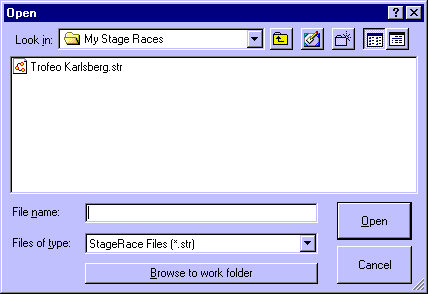

StageRace uses its own file type for the storage of all relevant data. The file type can be recognized from the .str extension.
During installation, the file type will be registered in Windows® in order to allow you to open StageRace automatically by clicking a .str file, anywhere in Windows®.
You work with StageRace files just like you are used from many other software applications, using the functions , , , and from the menu.
You can assign one folder as your standard work folder for storing .str files.
During installation, a "My Stage Races" folder will be created inside your "My Documents" folder which will be set as default work folder. If you want to change the default work folder, you can do this in the Options dialog, which can be found through in the menu.
From within Open and Save as dialogs you can browse to your own work folder by a single click on the Browse to work folder button.

A number of example .str files always come with the StageRace distribution. During installation, the example files are copied into the work folder that is created during installation. With these examples also come all the associated publications.
Note that all example files are set to read-only.
The internal layout of .str files has been changed over time. The current version of the file type is fV2030.
Files saved with a certain version of StageRace can not be opened in StageRace versions that were designed for older file versions. In your current version of StageRace, however, you can open files from StageRace 2000.1.07 and any newer version. Note that once you save your old file, it will be saved in the new file format. An advance warning is given. Also a warning is given when you are opening an older type of file.
The version number of a file at the time that it was opened is displayed in the status bar.